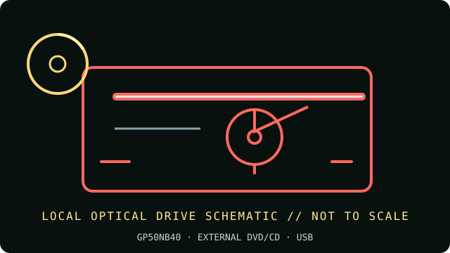

[ INDIVIDUAL COMPONENT // OPTICAL DRIVES ]
LG GP50NB40 Portable DVD Rewriter
Compact external USB DVD rewriter in LG’s GP50 family. Confirm the full suffix and regional service-code label; the near-identical GP50NW40 is a different color/SKU variant.

IDENTIFICATION: LG GP50NB40 · Match the complete label, service code and manual revision before relying on a feature or installing firmware.
Verified specifications
| Catalog subcategory | External DVD writers |
|---|---|
| Exact product identifier | LG GP50NB40 |
| Supported DVD/CD formats | Reads DVD-ROM, DVD±R/RW, DVD±R DL, DVD-RAM, M-DISC DVD+R, CD-ROM, CD-R and CD-RW. Writes DVD±R, DVD±R DL, DVD+RW, DVD-RW, DVD-RAM, M-DISC DVD+R and CD-R/RW. |
| DVD read/write speeds | DVD±R up to 8×; DVD±R DL up to 6×; DVD+RW up to 8×; DVD-RW up to 6×; DVD-RAM up to 5×; single-layer M-DISC DVD+R up to 4×. DVD read up to 8×. |
| CD read/write speeds | CD-R up to 24×, CD-RW up to 24×; CD read up to 24×. |
| USB interface and power | USB 2.0 Mini-B device connection; USB bus-powered 5 V. A Y-cable/second USB power connection may be needed on a weak host port. |
| Compatibility, software and caveats | LG documentation lists Windows and Mac OS X; the bundled authoring/playback suite is Windows-oriented and is not a current macOS application. For current OS versions, verify class-driver enumeration and install separate DVD playback/burning software as needed. |
Use and preservation notes
- Close the tray and keep the drive level during operation; do not disconnect or remove a disc during an active write.
- Use known-good media and a conservative supported speed for archival copies. Finalize as appropriate and read back the disc; retain a checksum and log drive model, firmware, software, media ID and errors.
- Store optical media in protective cases away from heat, direct light, humidity, scratches and adhesive labels. Keep more than one verified copy.
Manufacturer and manual sources
- LG — GP50NB40 official product supportModel-specific LG support, downloads and warranty portal.
- LG Canada — GP50NB40 product support and manualsLG regional support for this exact GP50NB40 service code; consult matching manual/revision.
Advertised maxima are media-dependent drive ratings, not guarantees of a successful burn or recovery from damaged/aged media. Exact host and software support can change by region and operating-system release.